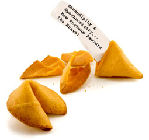

Serendipity and Synchronicity... How Fortune Favours the Brave!
Thomas Alva Edison's 7th Secret
Invention Strategy For Million Dollar Ideas
Thomas Edison's Top Ten Invention
Strategies: 1--2--3--4--5--6--7--8--9--10

7. Serendipity and Synchronicity... How Fortune Favours the Brave!
Thomas Edison realised the golden secrets of fate and good fortune! He knew that if he followed up his visions, thought hard and worked hard,
then luck would favour him more and more. For Edison, striving and hard, hard thinking led to the chance thought and the sudden opening of
opportunity. He was always alert and ready to explore a new pathway when it opened up to him.
Tony Buzan, the creator of Mind Mapping, coined the excellent phrase Goethendipty to describe the way that life responds
to your vision, intention and action with synchronicities and lucky breaks. Why Goethendipty? Well, listen to these much quoted and
very powerful lines from Johann Wolfgang Von Goethe:
"Until one is committed there is hesitancy, a chance to draw back. Always ineffectiveness concerning all acts of initiative and
creation. There is one elementary proof - the ignorance of which kills countless ideas and splendid plans. This is, that the moment one
definitely commits oneself, then providence moves too. All sorts of things occur to help one, that would never have otherwise occurred. A
whole stream of events issue from the decision, raising in one's favour all manner of unforeseen incidents and material assistance, which
no man could have dreamed would come his way. Whatever you can do or dream you can, begin it. Boldness has power and magic in it, begin it
now."
Many people are commitment phobics. As evidenced by the divorce courts! We squirm on the hook of a decision looking for ways to get out of it.
That's not the way to get successful. It's certainly a recipe for quickly destroying any kind of success or happiness that you do get. Genius
makes a decision, and takes massive action, totally committed to achieving the outcome.
Thomas Edison didn't fluff around, mincing between ideas. When he decided that he wanted to invent the electric light, he totally committed
his energy, staff and resources to that end. There was never any doubt about whether he would continue despite all those thousands of "failed"
attempts.
There is a tremendous power in commitment that so few of us ever get to experience. When you truly commit yourself to a partner, a deep
seismic shift occurs in your character and your relationship takes on new depth and richness. Many so-called relationships are just two
individual people "waiting to see what happens", prepared to jump if things don't work out. People go into relationships with subconscious
"prenuptial" agreements - they are planning for break-ups.
People start businesses or work for companies that they are never truly committed too. Their work and output is doomed. Unless you commit to
your business, it will fail. Unless you commit to your company, your company will fail or you will be fired. Without commitment, you are a shadow
of what you truly can be.
Grow up. Get responsible. Take control. No-one's coming to the rescue. It's up to you to generate ideas and follow through on them to their
completion.
With commitment and determination, you can become a Giant. A true genius.
One man's synchronicity is another man's recticular activating system...
When
you are really passionate and interested in a certain subject, person or thing, you will start to notice more and more things that relate to what
you are passionate about. Often these can seem like coincidences, but brain buffs tell us it is simply our, wait for it, Recticular Activating
System (RAS)... that part of our brains that screens out information we are not interested in and focusses on the things that we are most
interested in.
With an infinite amount of stimuli constantly hitting our brains, we need the ability to filter that which is most relevant to us. And the RAS
is that filter. So when you fall in love with the latest model of car at the showroom, drool over the brochure at home, and day dream about
driving it, you set off your RAS big time.
Suddenly you start to notice that car everywhere! It's on TV, your boss drives up in the model you want, a flyer comes through your mailbox
with a picture of a house with that car in the driveway. The stronger your feeling and commitment to having that car, the more coincidences will
seem to occur, until you finally get round to buying/winning/being given that car!
|
"Once you decide that something is a priority, you give it tremendous emotional intensity, and by
continually focusing on it, any resource that supports its attainment will eventually become clear."
~ Tony Robbins
|
When you are working with a particular challenge, it pays to saturate your mind with as much information as you can find about that.
Everything that relates to it. You must demand of your mind that it seeks out every little scrap of information that relates to the challenge.
This builds knowledge into your brain. It carves out new neuronal pathways. It makes new connections possible. Your brain becomes rich and dense
with new pathways relating to the challenge.
As you keep pushing for new information, new ideas, and the answers you seek, expect to be guided. Be prepared to follow up rogue thoughts,
new opportunities that present themselves. There is a power at work here. Expect luck and you will get it. If you can formulate a vision of
something working, then it's just a case of persisting until you find the way to make it happen. And this will happen in direct proportion to
your intensity and determination to achieve the end result.
So, commit to your relationships. Commit to your ideas and visions. Take massive action towards their achievement and, like Thomas
Edison, don't give up. Persist and watch as "lady luck" dances to your side. As the forefathers wisely reminded themselves, God helps those
who help themselves. Get up, get out there, get busy... unleash those fateful forces.
NEXT: Thomas Edison's Secrets: Kidding Around: Humor, playfulness and the joy of the
task!
|
THE BRAIN SQUEEZER NEWSLETTER!
Sign-Up
For Wily Walnut's "The Brain Squeezer" Newsletter and learn to squeeze all the creative thinking juices from your brain!
Get your juiciest ideas and genius IQ power flowing!
Wily Walnut: Discover How To Banish The Inner Moron, Shake
Off the Dust Of Mediocrity and Discover the Genius You Were Born To Be!
|
|